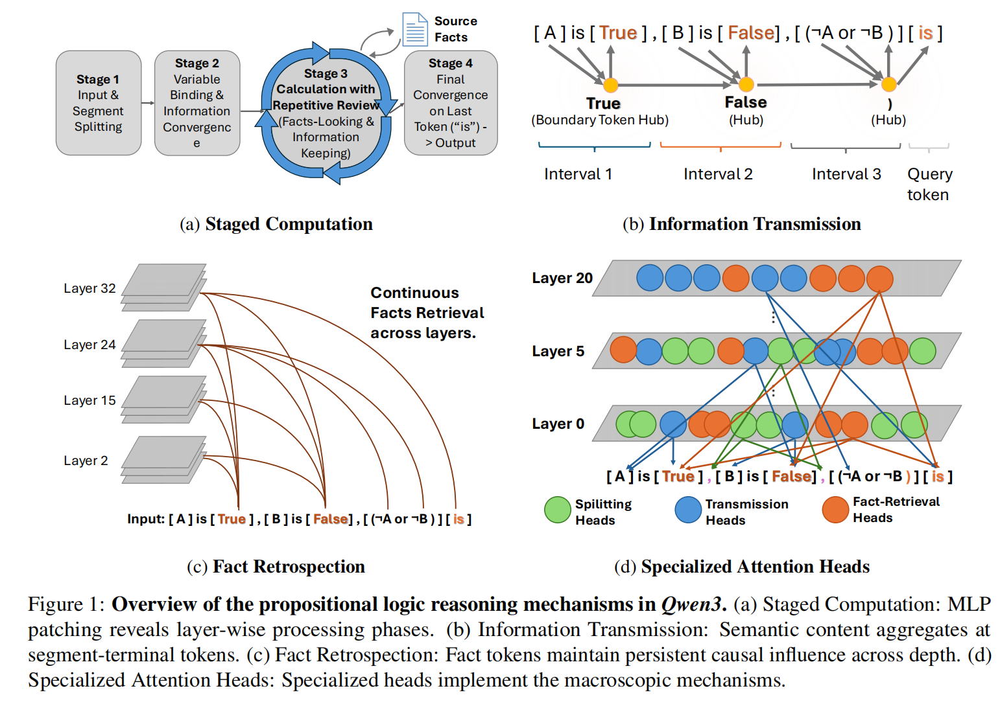

ACL ARR 2026

Towards a Mechanistic Understanding of Propositional Logical Reasoning in Large Language Models
Danchun Chen, Qiyao Yan, Liangming Pan
ACL ARR 2026 January Submission · Under Review
- Conducted mechanistic analysis of Qwen3 (8B and 14B) on PropLogic-MI.
- Uncovered four interlocking mechanisms for logical reasoning.
Other Publications
- SWRV: Empowering Self-Verification of Small Language Models through Step-wise Reasoning and Verification
Danchun Chen, Yixin Cao, Liangming Pan
XLLM @ ACL 2025 · Certificate of 2nd Place Award
[Code]
For a complete list, please visit my Google Scholar profile.